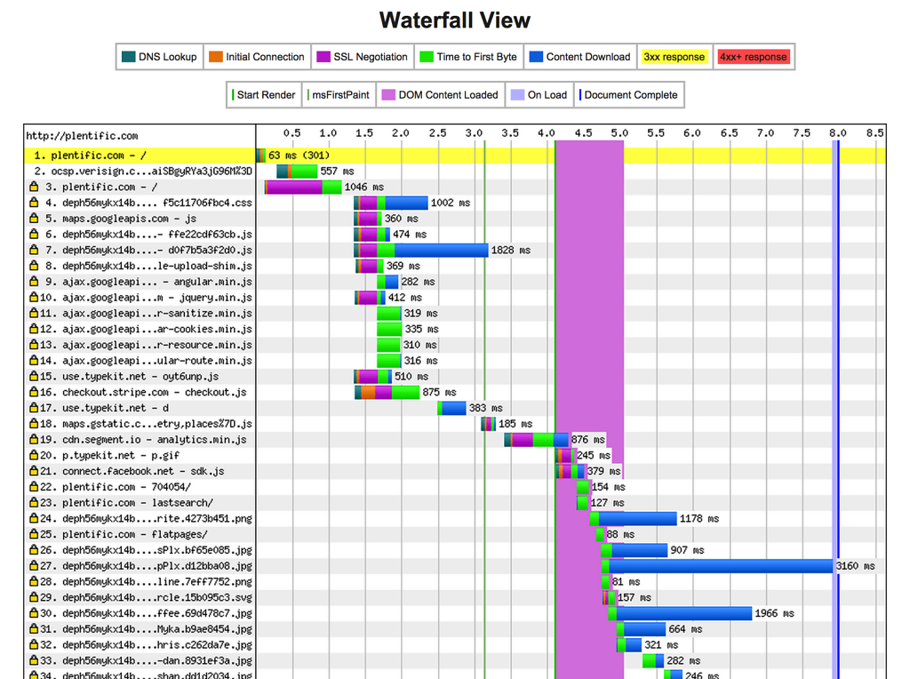
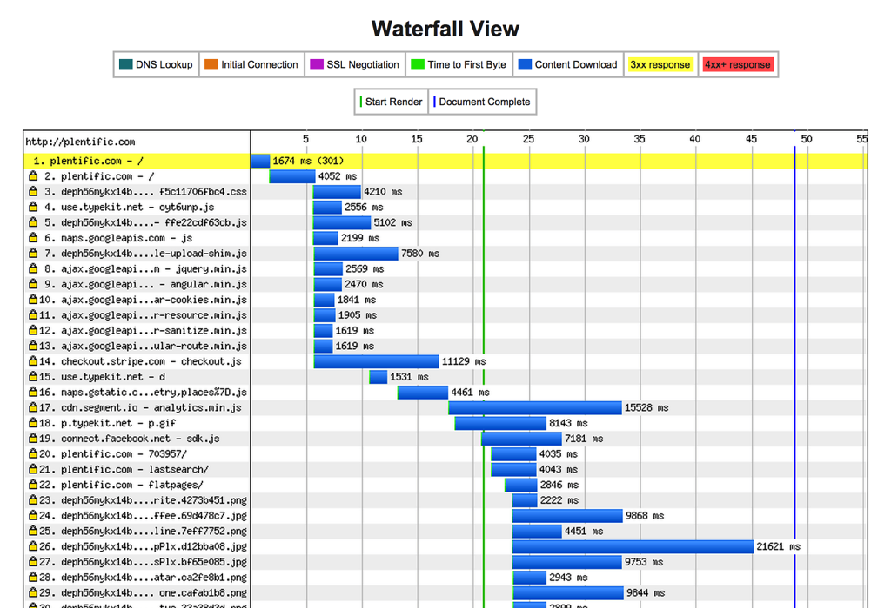
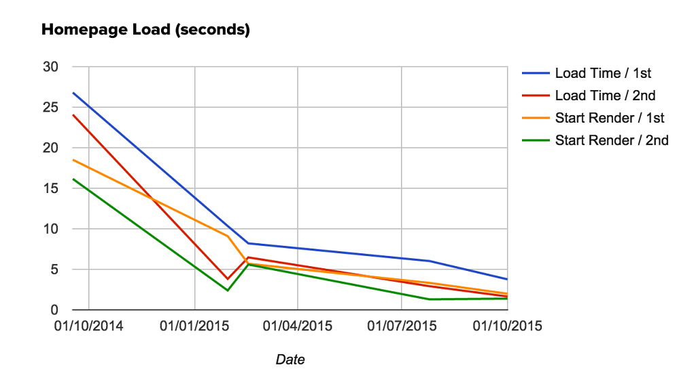
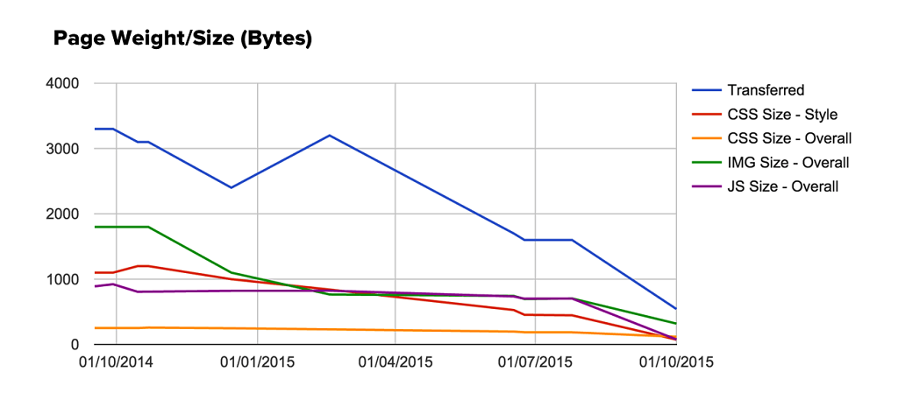
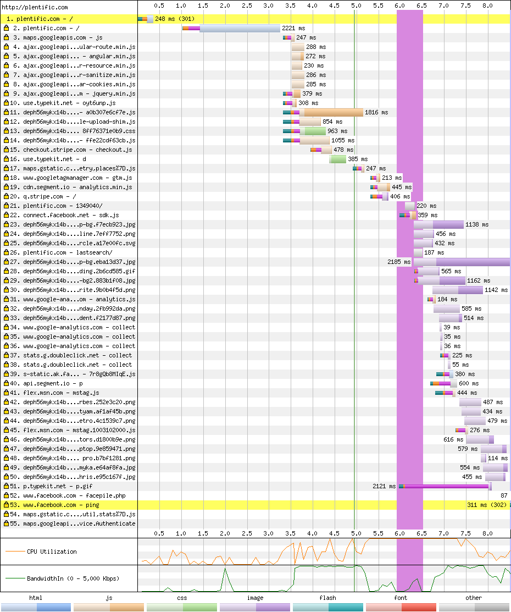
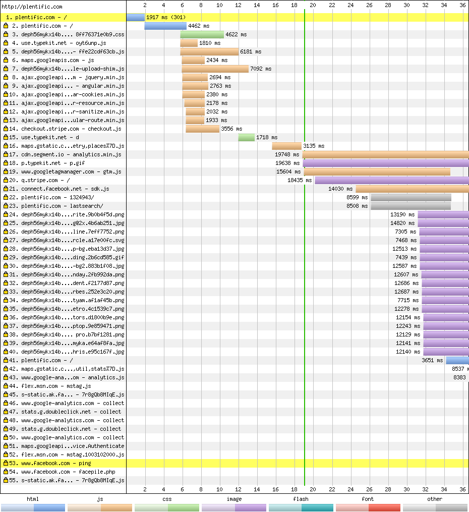
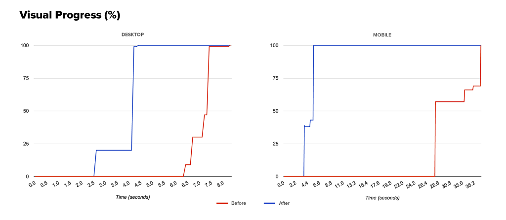

Plentific - Performance
I have done a huge work in reducing the overall page weight and load time for the Plentific website. Because performance matters!
-
Web (not) performance
The status of the website when I joined: an extremely slow and heavy, completely tangled up, monolithic Angular application, that during the page rendering was able to lock the CPU for several seconds (the pink bar is the Javascript execution in the browser).

-
Web (not) performance
In some cases the web pages could take up to 50 seconds to load!

-
Page load optimisation
This is the result after one year of work (probably the result I am more proud of): the reduction of the page load time by a factor of ten!

-
Page weight optimisation
And the corresponding reduction of the page weight by a similar factor.

-
Comparison of load times on a desktop browser
Play the video (sorry, no preview) to see the difference in the loading times before and after the web pages optimisations.
-
Comparison of load times on an iPhone
When comes to mobile devices, the performance improvement is even more prominent.
-
Web performance on desktop
The waterfall chart for a desktop browser, before and after one year of optimisations.

-
Web performance on mobile
The waterfall chart for a mobile browser, before and after one year of optimisations.

-
Visual Progress / Speed Index
One of the key factors used to calculate the Speed Index of a website is the "shape" of the visual progress of a page. Here a comparison of the progress before and after the optimisation.
